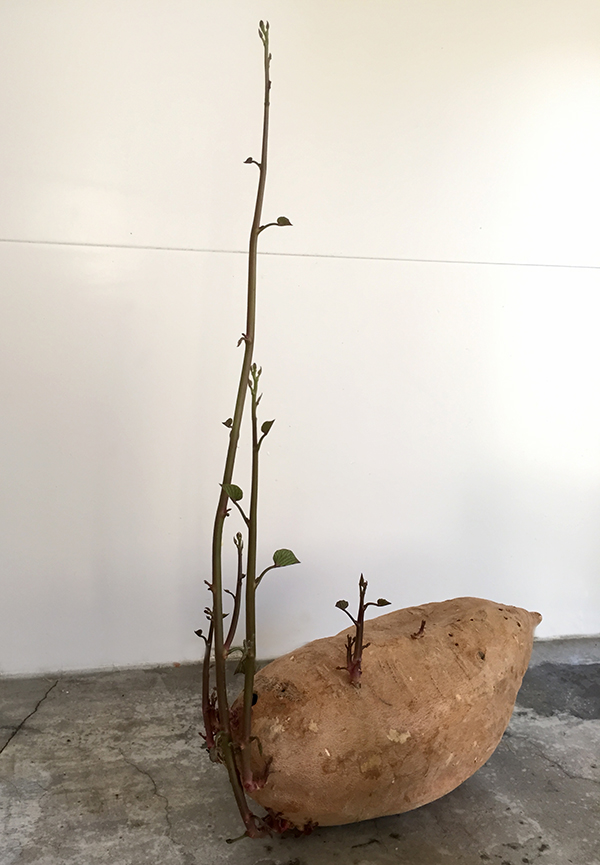
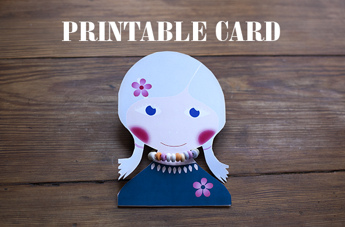
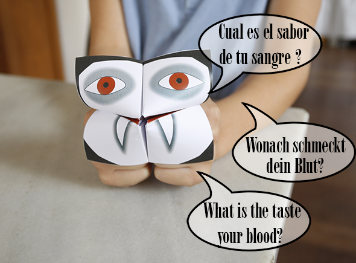

Pinterest
Instagram
ES
EN
DE
☰ Menü
Home
Das Haus
Zubehör
Dekoration
Faltanleitung
Illustration
Trinkflaschen
Bastelheft
App
Blog
Feste
Weihnachten
Ostern
Halloween
Fasching & Kostüme
Valentinstag
Geburtstag
Mutter-/Vatertag
Schulanfang
Jahreszeiten
Frühling
Sommer
Herbst
Winter
Was machen
Spielzeug
Spiele
Druckvorlagen
Essen & Rezepte
Dekoration
Malen
Experimente
Draußen
Lernen
Tiere
Geschenke & Schmuck
Bauen & Tricks
Weitere Ideen
Material
Papier
Karton
Papierrollen
Recycling
Steine
Blätter & Natur
Stoff & Nähen
Feste
Weihnachten
68
Ostern
41
Halloween
26
Fasching & Kostüme
36
Valentinstag
15
Geburtstag
13
Mutter-/Vatertag
4
Schulanfang
10
Jahreszeiten
Frühling
19
Sommer
42
Herbst
22
Winter
32
Was machen
Spielzeug
79
Spiele
125
Druckvorlagen
47
Essen & Rezepte
95
Dekoration
94
Malen
64
Experimente
19
Draußen
64
Lernen
67
Tiere
111
Geschenke & Schmuck
89
Bauen & Tricks
81
Weitere Ideen
46
Material
Papier
92
Karton
61
Papierrollen
23
Recycling
121
Steine
33
Blätter & Natur
52
Stoff & Nähen
42
Ostern
Anlass
Meine 10 liebsten Osterbasteleien
Material
Hase aus Zeitschriftenstreifen
Anlass
Kakteen im Ei
Animal
Hasentüten ohne Nähen
Anlass
Frohe Ostern!
Animal
Osterschnecken
Anlass
Tätowierte Eier
Ostern
Josefas Mona de Pascua
Ostern
Frohe Ostern
Anlass
Ostereier-Magnete
Papier
Riesige Pappmaché-Eier
Ostern
Osterkostüm fürs Ei
Anlass
Osterlichter mit elektrischen Teelichtern
Material
Hasen-Lesezeichen
Anlass
Noch ein Hase
Anlass
Häschen
Anlass
Hasengirlande
Anlass
Eier mit Loom Bands
Anlass
Flaschenpost
Druckvorlagen
Hasen zum Ausdrucken
Anlass
La mona: Ostergebäck
Alle ansehen
Frühling
Anlass
Samen keimen
Material
Frühlingscollage
Anlass
Kakteen im Ei
Aktivität
Zeitschriften-Mosaik-Schmetterling
Frühling
Sprießende Süßkartoffel

PET- Flasche
Glasmarker aus Plastikflaschen
Origami
Papierblumen
kidsmobilebox
Drahtbäume fürs Puppenhaus
Anlass
Schmetterlinge mit Servietten-Fühlern
Anlass
Frühling
Anlass
Frühlingsblumen
Material
Pilze aus Sektkorken
Winter
Jahreszeitenkalender
Material
Blumen aus Klorollen
Papier
Drachen aus Schilf und Papier
Alle ansehen
Konstruieren
Aktivität
Zwille aus einem Ast
Aktivität
3D-Landschaft in der Dose
Aktivität
Star-Wars-Raumschiffe aus Karton
Aktivität
Bambus-Hundehütte
Aktivität
Drahtwolke mit Wimpeln
Konstruieren
Naturdeko
Alle ansehen
Druckvorlagen
Kostenloses downloaden
Aktivität
Katzen-Lesezeichen
Material
Der Eames-Elefant fürs Puppenhaus
Druckvorlagen
Bunte Einladungen mit Zuckerkette

Animal
Osterschnecken
Material
Papierschnecken mit Keksen
Druckvorlagen
Vampir-Himmel-und-Hölle

Alle ansehen
Ganzer Blog